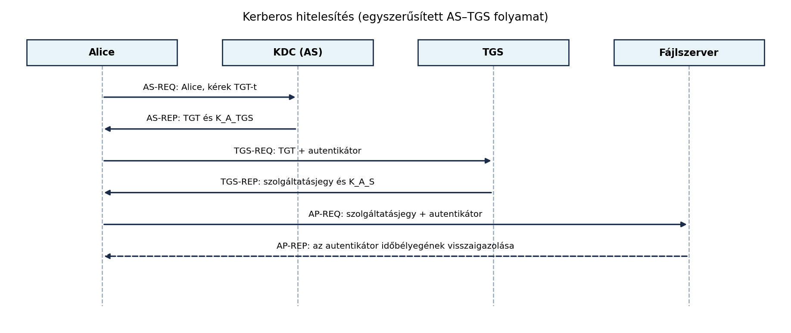

Amikor egy böngészőben bejelentkezünk egy vállalati belső oldalra, gyakran nem a célrendszer ellenőrzi a jelszót, hanem egy központi hitelesítő infrastruktúra. A mögötte lévő két leggyakoribb technológia a Kerberos és az OAuth 2.0 / OpenID Connect (OIDC) család. Mindkettőben kulcsszerep jut a tokeneknek és jegyeknek, és mindkettőben ugyanaz a buktató: ha a tokenellenőrzést a fejlécben található, támadó által is módosítható adatokra bízzuk, a teljes hitelesítés összeomlik. Ebben az alfejezetben a Kerberos jegyalapú működését, a Kerberoasting támadást, az OAuth/OIDC kriptográfiai elemeit, és a JWT leggyakoribb ellenőrzési hibáit tanuljuk meg.
A Kerberos a A kulcselosztás problémája és a Merkle-rejtvények alfejezetben bemutatott kulcselosztó központ (KDC) gondolatát valósítja meg. A felhasználó nem a cél-szolgáltatásnak adja meg a jelszavát, hanem a KDC-nek hitelesíti magát, és rövid életű, kriptográfiailag védett jegyekkel igazolja magát a szolgáltatásoknál.
A folyamatot az alábbi ábra foglalja össze. A KDC-n belül két alrendszer működik: az Authentication Server (AS), amely a felhasználót igazolja, és a Ticket Granting Server (TGS), amely a jegyeket állítja ki. A nyilak a Kerberos 5 legfontosabb üzeneteit mutatják.

A szöveges leírás nélkül is követhető: Alice először egy TGT-t (ticket-granting ticket) kér, azzal később szolgáltatásjegyet igényel, végül a szolgáltatásjegyet és egy friss autentikátort küld a fájlszervernek.
Definíció. A Kerberosban a jegy (ticket) a KDC által kiállított, a célszolgáltatás hosszú távú kulcsával titkosított adatcsomag. Tartalmazza legalább a kliens nevét, a kliens és a szolgáltatás közötti munkamenetkulcsot, az érvényességi időt és további attribútumokat. A TGT olyan jegy, amelynek célszolgáltatása maga a TGS. Az autentikátor (authenticator) a kliens által generált, a munkamenetkulccsal titkosított időbélyeg, amely a jegy használatát friss, visszajátszás ellen védett bizonyítékkal köti a klienshez.
A jegyet csak az tudja értelmezni, aki ismeri a célszolgáltatás kulcsát, így a jegyet a kliens nem tudja meghamisítani, csak továbbítani. A friss autentikátor biztosítja, hogy egy lehallgatott jegy önmagában ne legyen újrahasznosítható.
Legyenek a hosszú távú kulcsok a következők: a KDC és Alice által is ismert, jelszóból származtatott kulcs, a TGS kulcsa, a fájlszerver kulcsa. A KDC ismeri -t és -t.
Lépés 1 – AS-csere. Alice elküldi az AS-REQ üzenetet. Az AS ismeri Alice jelszavából származtatott kulcsot, generál egy friss munkamenetkulcsot, és visszaküldi: - , - .
A mai környezetekben az AS-REQ előhitelesítést tartalmaz: Alice egy -val titkosított időbélyeget küld. Enélkül bárki kérhet AS-REP-et Alice nevében, és azt offline jelszótesztre használhatja (AS-REP roasting). Alice a második elemet a saját kulcsával visszafejti, így megtudja -t. A TGT-t nem tudja elolvasni, mert az a TGS kulcsával van titkosítva.
Lépés 2 – TGS-csere. Alice TGS-REQ üzenetet küld: a TGT-t és egy időbélyegből készült autentikátort . A TGS visszafejti a TGT-t, megkapja -t, ellenőrzi az autentikátor időbélyegét, majd generál egy munkamenetkulcsot a fájlszerverhez. Válasza: - , - .
Lépés 3 – szolgáltatáshasználat. Alice AP-REQ üzenetben elküldi a fájlszervernek -t és az autentikátort . A fájlszerver visszafejti -t a saját kulcsával, megkapja -t, ellenőrzi az időbélyeget, majd visszaigazol: (a Kerberos 5-ben az autentikátor időbélyegét adja vissza; a régi Kerberos 4 még -et küldött). Ezzel a szerver bizonyítja, hogy ismeri a munkamenetkulcsot.
Támadás. A Kerberoasting a Kerberos egyik legismertebb támadása. A támadó rendelkezik egy érvényes, alacsony jogosultságú felhasználói fiókkal, de szeretné megszerezni egy szolgáltatásfiók jelszavát. A támadás lépései:
A támadás érdekessége, hogy nem a protokoll matematikai törése, hanem a jelszóalapú kulcsgyengeség kihasználása. Különösen hatékony akkor, ha a régi RC4-HMAC titkosítás használatával készült jegy kérhető, mert az a jelszó NTLM-hash-éből közvetlenül számolható kulccsal dolgozik, ami gyors offline tesztelést tesz lehetővé. A modern Kerberos-környezetek ezt a kriptorendszert igyekeznek letiltani, és AES-alapú jegyeket írnak elő.
Védekezés. Használjunk a szolgáltatásfiókokhoz hosszú, véletlenszerű jelszavakat, vagy géppel kezelt fiókokat (managed service accounts). Figyeljük a szokatlan TGS-kéréseket, és tiltsuk le az RC4-HMAC jegyek kérését. Az itt bemutatott lépéseket kizárólag saját, izolált tesztkörnyezetben vagy írásos engedéllyel rendelkező etikus tesztelés keretében szabad elvégezni.
A Kerberos elsősorban vállalati belső hálózatokban él; a webes
ökoszisztémában az OAuth 2.0 teremtette meg a delegált hozzáférés
keretét. Fontos félreértést eloszlatni: az OAuth 2.0 önmagában
autorizációs keretrendszer, nem hitelesítési protokoll.
Hitelesítést az arra épülő OpenID Connect (OIDC) ad,
amely az OAuth 2.0 tetején egy id_token nevű, JWT formátumú
tokent is visszaad.
Az OAuth 2.0 authorization code flow lényege:
authorization code-ot ad vissza a kliensnek.access token-re és opcionálisan
refresh token-re.access token-t a kliens Bearer tokenként küldi az
erőforrás-szervernek.A kódot azért cserélik háttércsatornán, mert az a böngészőben, az
URL-ben vagy a referer fejlécben kiszivároghat. A PKCE
(Proof Key for Code Exchange, RFC 7636) ezt a védelmet nyilvános
klienseknél is kikényszeríti: a kliens a kódkérés előtt generál egy nagy
entrópiájú code_verifier értéket, és annak SHA-256
lenyomatából képzett code_challenge-et küld. A kód
elcserélésekor be kell mutatnia a code_verifier-t, amelyet
a szerver ellenőriz. Ha a támadó ellopja a kódot, de nem ismeri a
code_verifier-t, nem tudja elcserélni.
Az OIDC id_token JWT-jében az iss
(kibocsátó), aud (címzett kliens), exp
(lejárat), nonce (kódkéréshez kötött véletlen) mezőket kell
ellenőrizni. A nonce köti a tokent az éppen folyamatban
lévő hitelesítési kéréshez, így egy korábban ellopott
id_token nem játszható vissza egy másik kérésben.
Definíció. A JSON Web Token (JWT) egy kompakt, URL-biztos formátum, amely állításokat (claims) tartalmazó JSON-objektumot szállít. A JWT-t rendszerint JWS (JSON Web Signature) szerkezettel írják alá, de lehet JWE (JSON Web Encryption) szerkezettel is titkosítani. A kompakt JWS felépítése:
BASE64URL(header) || '.' || BASE64URL(payload) || '.' || BASE64URL(signature)A header tipikus mezői: alg (aláíró
algoritmus, például HS256 vagy RS256),
kid (kulcsazonosító), typ (típus). A
payload tartalmazza a regisztrált állításokat:
iss, sub, aud, exp,
nbf, iat, jti, valamint az
alkalmazás saját mezőit. A signature HS256 esetén:
ahol a megosztott szimmetrikus kulcs. RS256 esetén a privát RSA-kulccsal készített PKCS#1 v1.5 aláírásról van szó, a nyilvános kulcs a verifikáláshoz.
A JWT önmagában nem titkosít: ha nem JWE-t használunk, a payload bárki által kiolvasható. Amit a JWS garantál, az az integritás és hitelesség, feltéve, hogy az aláírást helyesen ellenőrzik.
alg: none és az RS256/HS256-zavarA JWT ellenőrzésekor a naiv implementáció hajlamos arra, hogy a
fejlécben lévő alg mezőt tekintse utasításnak. Ez két
klasszikus támadást nyit meg.
alg: none támadás. A JWT-szabvány
megenged egy none algoritmust, amely aláírás nélküli tokent
jelent. Számos korai könyvtár úgy kezelte ezt, hogy ha a fejlécben
alg: none szerepelt, az aláírás-ellenőrzést egyszerűen
átugrotta. A támadó így a token harmadik részét üresen hagyva, vagy
tetszőlegesen módosított payloaddal létrehozhat egy érvényesnek látszó
tokent. A helyes viselkedés: a verifikáló csak az általa konfigurált,
engedélyezési listán szereplő algoritmusokat fogadja el, és a
none soha nincs ezen a listán.
RS256/HS256-zavar. Tegyük fel, hogy a szerver RS256 aláírású tokent vár, és a nyilvános kulcs elérhető (például a JWKS-végponton). A szerver azonban HS256-ot is elfogad, és ugyanazt a kulcsot használja HMAC-kulcsként. A támadó ekkor a bájtjait szimmetrikus kulcsként használva HS256 aláírást készít:
A fejlécbe alg: HS256-ot ír. A szerver, ha a fejléc
alapján választ HMAC-ellenőrzést, ugyanazzal a
értékkel számol HMAC-ot, ezért az aláírás ellenőrzése sikeres lesz. A
támadónak nem kellett megszereznie a privát kulcsot, csak a nyilvános
kulcsot, amely nyilvános. Ez a támadás azt használja ki, hogy egy kulcs
típusa attól függően más, hogy aláíró vagy MAC-művelethez használják. A
védekezés az algoritmus-rögzítés és a
kulcstípus-kötés: a verifikálónak a konfigurációból
kell tudnia, hogy egy adott kulcsazonosítóhoz RS256 vagy HS256 tartozik,
és a fejléc alg mezőjét csak akkor szabad figyelembe venni,
ha az megegyezik ezzel a rögzített értékkel. Emellett a kulcskezelőnek
is tudnia kell a kulcs típusát (RSA nyilvános kulcs kontra
oct HMAC-kulcs).
Az alábbi ábra a két ellenőrzési utat egymás mellett, egy játéktokenen mutatja: ugyanaz a nyilvános kulcs-bájtsor a naiv verifikálóban HMAC-kulccsá válik, a kulcshoz kötött algoritmusú verifikáló viszont már a harmadik lépésben elutasítja a tokent.
Továbbvitt eredmény. Az itt bemutatott JWT-verifikációs hibák a API-misuse: a leggyakoribb kriptográfiai programozási hibák alfejezetben mint bemenet-ellenőrzési hiányosságok, a Protokollszintű hibák: visszaminősítés, bemenetellenőrzés, kontextuskötés alfejezetben mint algoritmus-visszaminősítés és kontextuskötés nélküli tokenelfogadás térnek vissza.
Az alábbi kód nem használ külső JWT-könyvtárat, így jól látszik a
három kulcslépés: (1) csak a megengedett algoritmus fogadható el, (2) az
aláírást hmac.compare_digest-tel, konstans időben
hasonlítjuk, (3) a lejáratot (a mostani időhöz mérve), a címzettet és a
kibocsátót is ellenőrizzük.
# OKTATÁSI CÉLRA – NEM ÉLES HASZNÁLATRA
import base64, hashlib, hmac, json, secrets, time
def b64u(x: bytes) -> str:
return base64.urlsafe_b64encode(x).rstrip(b"=").decode()
def b64u_decode(s: str) -> bytes:
pad = "=" * (-len(s) % 4)
return base64.urlsafe_b64decode(s + pad)
def verify_hs256(token: str, key: bytes, audience: str, issuer: str) -> dict:
parts = token.split(".")
if len(parts) != 3:
raise ValueError("nem JWS")
header_raw = b64u_decode(parts[0])
header = json.loads(header_raw)
# Algoritmus-rögzítés: a fejléc alg mezője NEM utasítás, csak megerősítés.
if header.get("alg") != "HS256":
raise ValueError("nem engedélyezett alg")
signing_input = f"{parts[0]}.{parts[1]}".encode()
expected = b64u_decode(parts[2])
actual = hmac.new(key, signing_input, hashlib.sha256).digest()
if not hmac.compare_digest(actual, expected):
raise ValueError("érvénytelen aláírás")
payload = json.loads(b64u_decode(parts[1]))
if payload.get("aud") != audience:
raise ValueError("aud nem ide szól")
if payload.get("iss") != issuer:
raise ValueError("idegen kibocsátó")
now = int(time.time())
exp = payload.get("exp")
if not isinstance(exp, int) or exp <= now:
raise ValueError("lejárt token")
return payload
key = secrets.token_bytes(32) # HS256 kulcs: 256 bit
header = b64u(json.dumps({"alg": "HS256", "typ": "JWT"}).encode())
payload = b64u(json.dumps({"sub": "alice", "role": "admin",
"iss": "https://idp.example", "aud": "api.example",
"exp": int(time.time()) + 3600}).encode())
sig = b64u(hmac.new(key, f"{header}.{payload}".encode(), hashlib.sha256).digest())
token = f"{header}.{payload}.{sig}"
claims = verify_hs256(token, key, "api.example", "https://idp.example")
print({k: v for k, v in claims.items() if k != "exp"}) # az exp a futás idejétől függVárt kimenet:
{'sub': 'alice', 'role': 'admin', 'iss': 'https://idp.example', 'aud': 'api.example'}A secrets.token_bytes(32) előállítja a 256 bites
kulcsot. Éles alkalmazásban használjunk bevált, auditált könyvtárat,
például a PyJWT-t, de ott is kötelező az
algorithms paraméter rögzítése:
jwt.decode(token, key, algorithms=["RS256"], audience="api.example", issuer="https://idp.example");
ez az exp ellenőrzése mellett kis óraeltolódás-tűrést
(leeway) is megenged. A kimenetből az exp mezőt kihagytuk,
mert értéke a futás idejétől függ (a kódot CPython 3-mal futtattuk).
2015 körül a JWT-aláírás-ellenőrzés hibái széles körben napvilágra
kerültek. A leggyakoribb probléma az volt, hogy több JWT-könyvtár
elfogadta az alg: none fejlécet, vagy a fejléc
alg mezőjét úgy kezelte, mintha a verifikáló döntése lenne.
A támadó egy érvényesnek látszó, tetszőleges payloadú tokent tudott
előállítani, és ezzel más felhasználó, például adminisztrátori szerep
birtokába juthatott. Az érintett könyvtárak és verziók pontos listája,
valamint a hozzájuk tartozó CVE-azonosítók ellenőrzést igényelnek; a
tanulság azonban időtálló.
Az incidens ismét megerősítette a két alapelvet: a token formátuma soha nem biztonság; a biztonság a verifikálási algoritmus rögzített, engedélyezési listás működésén múlik. Ugyanez a tanulság a Kerberosnál is megjelenik: a jegy formátuma nem titkos, a biztonságot az adja, hogy a jegyet a célszolgáltatás kulcsával titkosítják, és az autentikátor friss időbélyeget köt a használathoz.
alg: none elfogadása. A verifikáló a
fejlécből választ algoritmust, és a none hatására átugorja
az aláírást. Helyes gyakorlat: a megengedett algoritmusok listáját a
szerver konfigurációja tartalmazza, és a none soha nincs
rajta.alg mezője szerint
váltanak algoritmust. Helyes gyakorlat: a kulcs típusát a
kulcsazonosítóhoz kötni, és a token fejlécében lévő alg-ot
csak akkor elfogadni, ha megegyezik a rögzített értékkel.secrets.token_bytes(32)-vel,
vagy egy nagy entrópiájú mesterkulcsból HKDF-fel származtatott kulcs
(jelszóból HKDF-fel nem lesz erős kulcs).kid vak elfogadása, vagy beágyazott
jwk megbízhatósága. A kulcsazonosító csak egy név;
a verifikálónak azt a saját, megbízható kulcstárolójában kell
feloldania. Idegen jwk vagy jku beágyazását
nem szabad elfogadni, hacsak a szerver explicit engedélyezési listát nem
használ.nonce-ot is.alg
mezője alapján választja ki az ellenőrző algoritmust?code_verifier értéke az OAuth 2.0
authorization code flow-ban?1. feladat (A). Rakd helyes sorrendbe a Kerberos-üzeneteket: TGS-REP, AP-REQ, AS-REQ, AS-REP, TGS-REQ, AP-REP. Mindegyikhez írd le, milyen jegyet vagy autentikátort szállít.
2. feladat (A). Egy JWT fejléce és payloadja:
Header: {"alg":"none","typ":"JWT"}
Payload: {"sub":"admin","role":"admin"}Mi a hiba, és hogyan védekeznél ellene?
3. feladat (B). Tegyük fel, hogy egy
Kerberos-környezetben a szolgáltatásfiók jelszava Cica123!
és a TGS-REP válaszban kapott szolgáltatásjegyet a támadó lementi.
Magyarázd el, miért tudja a támadó offline megszerezni a
szolgáltatásfiók jelszavát, és milyen intézkedéssel lehet ezt
megnehezíteni! A támadást csak izolált tesztkörnyezetben végezd el.
4. feladat (B). A PKCE folyamatban a kliens
code_verifier értéke egy nagy entrópiájú sztring. Írd le
lépésenként, hogyan számítja ki a code_challenge-et, és
miért nem elég a code_verifier elküldése a kódkéréskor.
5. feladat (C). Bizonyítsd be, hogy az
RS256/HS256-zavar lehetetlen, ha a verifikáló a kulcs típusát a
kid alapján rögzíti: RSA nyilvános kulcsnál csak RS256-ot,
szimmetrikus kulcsnál csak HS256-ot fogad el. Fogalmazd meg a
bizonyítási gondolatot, és mutasd meg, melyik lépésben akad el a
támadó.
6. feladat (D). Az alábbi játékverifikáló nagy hibát
tartalmaz: egy {"alg":"none"} fejlécű, üres aláírású
tokenre (lefuttatva) True-t ad:
# OKTATÁSI CÉLRA – NEM ÉLES HASZNÁLATRA
import json, base64, hmac, hashlib
def toy_verify(token: str, key: bytes) -> bool:
h, p, s = token.split(".")
alg = json.loads(base64.urlsafe_b64decode(h + "=" * (-len(h) % 4)))["alg"]
# HIBA: a fejléc választja az algoritmust; none esetén nincs ellenőrzés;
# az összehasonlítás sem konstans idejű
if alg == "none":
return True
if alg == "HS256":
signing_input = f"{h}.{p}".encode()
expected = base64.urlsafe_b64decode(s + "=" * (-len(s) % 4))
actual = hmac.new(key, signing_input, hashlib.sha256).digest()
return expected == actual
return FalseJavítsd ki a kódot úgy, hogy: (1) csak HS256-ot fogadjon el, (2) az
összehasonlítás konstans idejű legyen, (3) a none algot
elutasítsa. Mutasd be a javított függvényt.
alg downgrade-t
hajthat végre, például none-ra vált, vagy RS256-tól
HS256-ra, és így a verifikáló hibás művelettel ellenőrzi a tokent.code_verifier a kódkérés előtt generált véletlen
érték; a kód elcserélésekor a kliensnek be kell mutatnia. A szerver csak
azt a klienst engedi tokenhez jutni, aki a
code_challenge-hez tartozó code_verifier-t
ismeri, így egy ellopott kód önmagában használhatatlan.1. feladat (A). Helyes sorrend: AS-REQ, AS-REP, TGS-REQ, TGS-REP, AP-REQ, AP-REP. AS-REQ: a felhasználó TGT-t kér. AS-REP: a KDC TGT-t és a TGS-hez tartozó munkamenetkulcsot ad. TGS-REQ: a kliens a TGT-t és egy -sel titkosított autentikátort küld. TGS-REP: a TGS szolgáltatásjegyet és -t ad. AP-REQ: a kliens a szolgáltatásjegyet és -sel titkosított autentikátort küld a szolgáltatásnak. AP-REP: a szolgáltatás az autentikátor időbélyegét a munkamenetkulccsal titkosítva visszaküldi (Kerberos 4-ben még növelve).
2. feladat (A). A hiba az alg: none
használata: a payload aláírás nélkül, tetszőlegesen módosítható.
Védekezés: a verifikáló engedélyezési listája kizárja a
none-t, és a fejléc alg mezőjét csak a
rögzített, engedélyezett algoritmusokkal hasonlítja össze.
3. feladat (B). A támadó azért tudja offline megtámadni a szolgáltatásfiókot, mert a szolgáltatásjegyet kulccsal titkosítják, és a szolgáltatásfiók jelszavából származik. A támadó minden jelölt jelszóból kiszámítja a kulcsot, megpróbálja visszafejteni a jegyet, és ha a kapott szerkezet érvényes, megtalálta a jelszót. Védekezés: hosszú, véletlenszerű szolgáltatásjelszavak, géppel kezelt fiókok, RC4-HMAC letiltása, a TGS-kérések naplózása és monitorozása.
4. feladat (B). A code_challenge
kiszámítása: (1) a kliens generál egy nagy entrópiájú
code_verifier-t; (2) kiszámítja annak SHA-256 lenyomatát;
(3) a lenyomatot Base64URL-kódolja, és ezt küldi a kódkéréskor. A
code_verifier elküldése a kódkéréskor azért lenne rossz,
mert az a böngészőben, naplóban vagy refererben kiszivároghat; akkor a
támadó a kóddal együtt a code_verifier-t is birtokolná, és
a PKCE semmit nem védene.
5. feladat (C). A támadó az RS256/HS256-zavarban az
RSA nyilvános kulcs bájtjait HMAC-kulcsként akarja használni. Ha a
verifikáló a kid alapján egyértelműen tudja, hogy az adott
kulcs RSA nyilvános kulcs, akkor a tokenen csak RS256
aláírás-ellenőrzést hajt végre, soha nem HMAC-ot. A támadó által küldött
fejléc alg mezőjét figyelmen kívül hagyja, vagy elutasítja,
mert nem egyezik a kid-hez kötött algoritmussal. Így a
támadó által HS256-tal készített aláírás sosem kerül HMAC-verifikálásra:
a protokoll megáll a fejléc-ellenőrzésnél vagy az RSA-aláírás
ellenőrzésénél. A hibrid támadáshoz az kellett volna, hogy a verifikáló
a fejléc alg értékétől függően HMAC-műveletre váltson.
6. feladat (D). Javított verzió:
# OKTATÁSI CÉLRA – NEM ÉLES HASZNÁLATRA
import base64, hashlib, hmac, json
def toy_verify_fixed(token: str, key: bytes) -> bool:
parts = token.split(".")
if len(parts) != 3:
return False
h, p, s = parts
try:
header_raw = base64.urlsafe_b64decode(h + "=" * (-len(h) % 4))
header = json.loads(header_raw)
except Exception:
return False
if header.get("alg") != "HS256":
return False
signing_input = f"{h}.{p}".encode()
try:
expected = base64.urlsafe_b64decode(s + "=" * (-len(s) % 4))
except Exception:
return False
actual = hmac.new(key, signing_input, hashlib.sha256).digest()
return hmac.compare_digest(actual, expected)A none algot a header.get("alg") != "HS256"
feltétel utasítja el, mert csak a HS256 az elfogadott. A
hmac.compare_digest konstans idejű összehasonlítást ad.
A Kerberos a KDC-re épülő jegyalapú hitelesítés: az AS TGT-t ad, a
TGS szolgáltatásjegyet állít ki, a szolgáltatás a jegyet a saját hosszú
távú kulcsával visszafejti, a friss autentikátor pedig a visszajátszást
gátolja. A gyenge szolgáltatásjelszó elleni
Kerberoasting offline szótártámadás, mert a jegy a
jelszóból származtatott kulccsal van titkosítva. Az OAuth 2.0
autorizációs kódját a PKCE védi a code_verifier és
code_challenge párosával; az OIDC JWT
id_token-jében az iss, aud,
exp és nonce mezőket ellenőrizni kell. A JWT
JWS aláírást ad, JWE titkosít; a JWS önmagában nem titkos. A két
legismertebb JWT-támadás az alg: none elfogadása és az
RS256/HS256-zavar. A helyes verifikáló rögzíti az engedélyezett
algoritmust, a kulcs típusát a kid-hez köti, konstans idejű
összehasonlítást használ, és ellenőrzi az
exp/aud/iss/nonce
mezőket.
Továbbvitt eredmény. A hibás JWT-verifikáció és az algoritmus-downgrade a API-misuse: a leggyakoribb kriptográfiai programozási hibák és a Protokollszintű hibák: visszaminősítés, bemenetellenőrzés, kontextuskötés alfejezetben mint visszatérő implementációs és protokollhibák szerepelnek.
A Kerberos 5 protokollt az RFC 4120, az OAuth 2.0 keretrendszert az RFC 6749, a PKCE-t az RFC 7636, a JWT-t az RFC 7519, a JWA algoritmusait az RFC 7518 írja le. A szövegben említett 2015-ös JWT-könyvtársebezhetőségek konkrét verzióinak és CVE-azonosítóinak listája ellenőrzést igényel. A Kerberoasting gyakorlati részletei (RC4-HMAC letiltásának konkrét hatása) környezetfüggőek, ezért éles rendszeren csak az adott platform aktuális biztonsági útmutatóját kövesse.